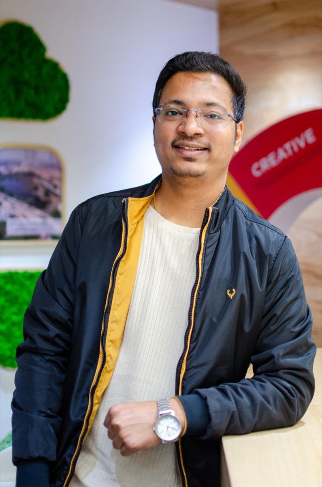
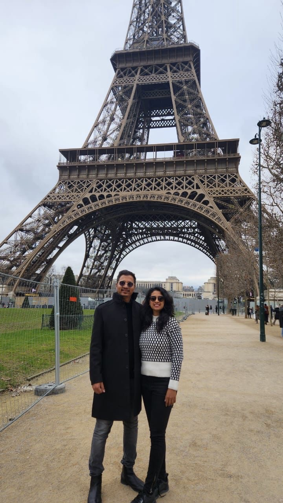
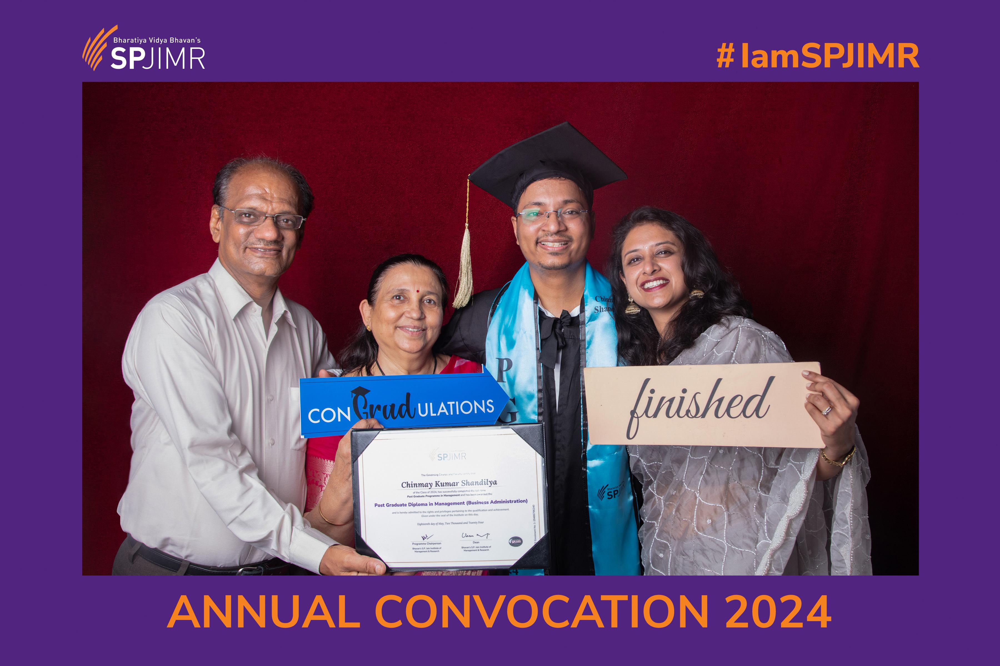
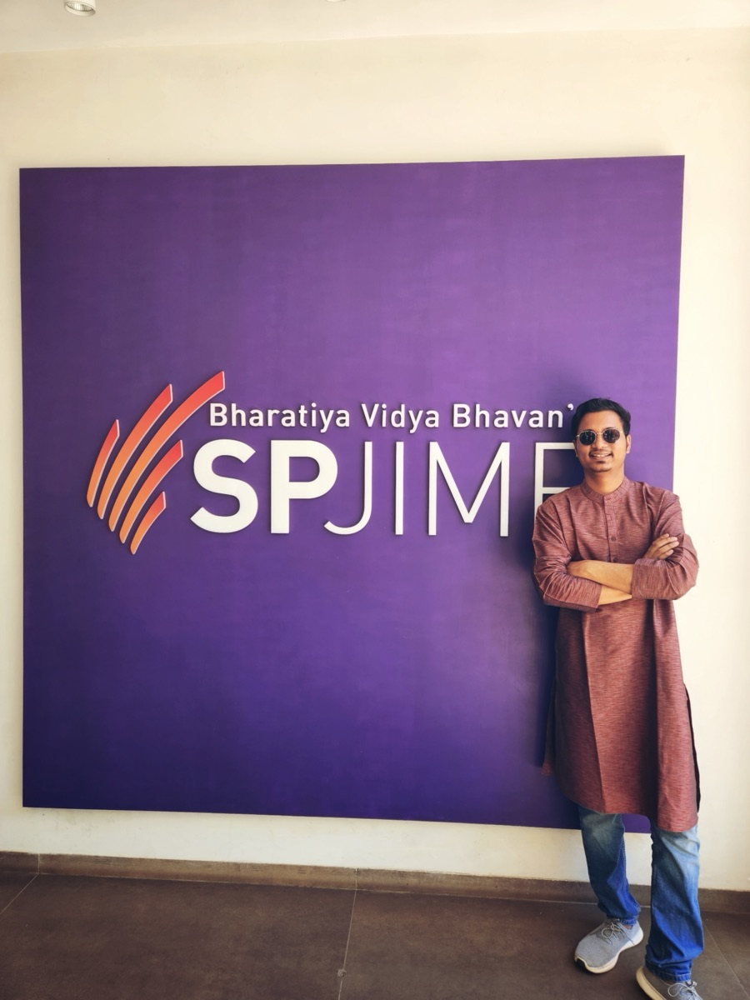

I'm from Agra, a small town in India, born to self-made parents who instilled in me the values of hard work and persistence. Growing up with limited resources but unlimited ambition, I learned to build solutions from scratch and approach problems with a fresh perspective.
My journey from a small town to collaborating with India's leading consumer tech companies is fueled by curiosity, grit, and a firm belief that technology has the power to democratize opportunities for all.


Never giving up on challenging problems, striving for excellence in everything
Honest, transparent, and ethical in all interactions and relationships
Understanding user needs deeply and designing solutions that serve people
Breaking down complex problems to fundamentals and building from scratch
"Success isn't about having all the answers—it's about asking the right questions and having the courage to pursue them relentlessly."
I believe in the power of thoughtful questioning and systematic problem-solving. Every challenge is an opportunity to learn, grow, and create something meaningful. My approach combines analytical thinking with human-centered design, ensuring that solutions not only work technically but also resonate emotionally with users.